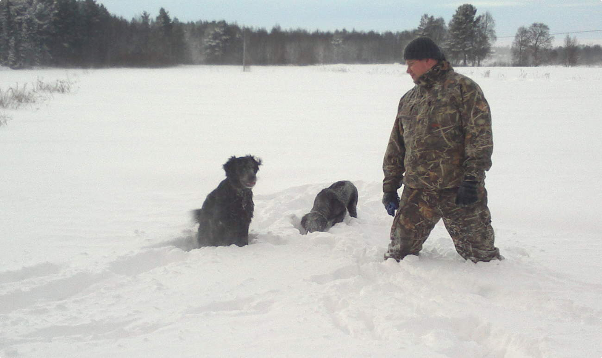

Yli 20 vuotta työkokemusta kouluttamisesta ja IT-maailmasta. Toimin kouluttajana ja tietoturvavastaavana Oulussa. Olen harrastanut tietotekniikkaa ihan pikkupojasta lähtien ja myöhemmin harrastuksesta tuli myös työ.
Avainsanoja: Katakri, tietoturvan kevytauditoinnit, riskikartoitukset, avoimen lähdekoodin NIDS-järjestelmät, haittaohjelmasuojautuminen, IT- ja tietoturvakoulutus, IP-verkot, Linux, Cisco, Windows.
 Isäntä ja sileäkarvaiset noutajat
Mielenkiinnon aiheita voi seurata Twitterissä: https://twitter.com/tkorpela
Päätyö on Oulun ammattikorkeakoulussa.
Erilaisten kiireiden vuoksi minua ei tavoita tätä kautta...